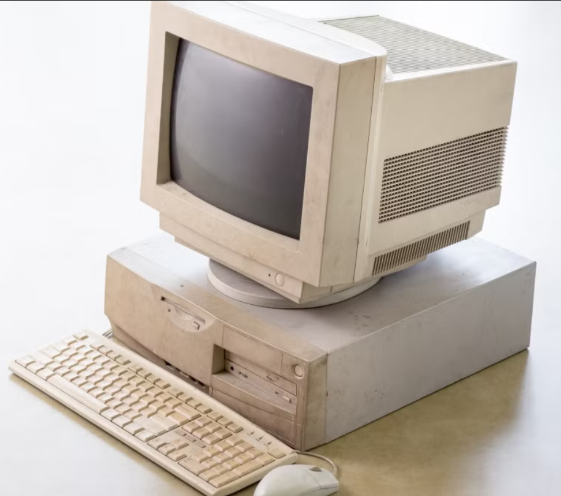

Description
The image displays a beige vintage desktop computer system placed on a plain surface with a light background. A bulky CRT monitor sits on top of a rectangular system unit. The monitor has a thick frame and a dark screen.
The system unit beneath the monitor includes visible front panels such as a floppy disk drive and another drive slot. In front of the system unit, there is a matching beige keyboard and a wired mouse resting on the surface.
The entire setup appears old and slightly worn, representing an early generation personal computer commonly used in offices and schools.
Universities in Uganda
- Kyambogo
- Mechanics
- Computing
- Social Works
- Makerere
- Computing
- Medicine
- Nursing
- Surgery
- Mbarara
- Engineering
- Science
- Technology
| TIME TABLE | ||||
|---|---|---|---|---|
| MON | TUE | WED | THUR | FRI |
| BITC | BIS | BITC | BLIS | |
| BITC | BIS | BLIS | ||
| BLIS | BIS | |||
| BREAK | ||||